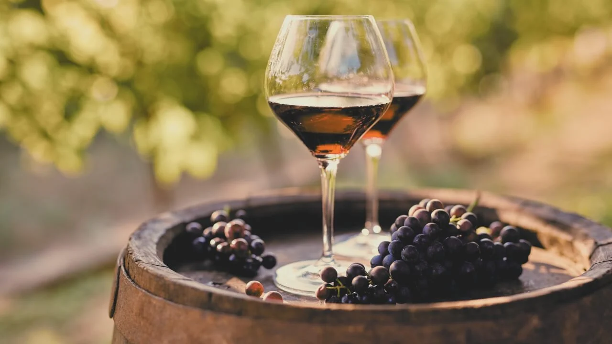

Nossa História
A Vinheria Agnello iniciou suas atividades em São Paulo há mais de 15 anos, contando com apenas uma loja física onde coloca à disposição do mercado uma vasta gama de rótulos de vinícolas nacionais e internacionais.
Um de seus principais diferenciais é o preparo de seus vendedores para orientar os clientes quanto às características de cada tipo de uva, região, vinícola ou rotulo de vinho, entre outros detalhes relevantes, sugerindo com base nesse conhecimento harmonizações com os mais diversos tipos de alimentos e refeições, e a adequação de vinhos às diferentes ocasiões de consumo.
Para atender a crescente demanda de clientes, a Vinheria Agnello passou a disponibilizar seus produtos também através de um e-commerce, com entrega em todo o território nacional.

Em decorrência da pandemia seu movimento sofreu um impacto significativo, dadas as restrições de mobilidade de seus compradores que se viram impedidos de frequentar a loja física e muitos acabaram migrando para lojas online. Com uma gestão tradicional e conservadora o sr. Giulio, proprietário da vinheria, resistiu por muito tempo à ideia de entrar no mundo do e-commerce, por julgar esse um meio um tanto “frio”, distante do cliente, e, portanto, não adequado para o padrão de atendimento que gosta de oferecer em sua loja. No entanto agora, para buscar minimizar o impacto negativo da pandemia em seus negócios, Giulio resolveu seguir os conselhos de sua filha Bianca e está disposto a contratar o desenvolvimento de um portal de e-commerce. Ao pesquisar o mercado Bianca recebeu inúmeras indicações de nossa empresa como a ideal para atendê-los no desenvolvimento de um portal com a cara da Vinheria Agnello, dada nossa capacidade de compreender o cliente de modo empático e nossa preocupação com a experiência do usuário como principal fator de sucesso de um software. Em nossas conversas preliminares foi possível levantar mais informações sobre a Vinheria, o mundo dos vinhos e seus clientes. Os parágrafos a seguir são um resumo do que foi possível conhecer.